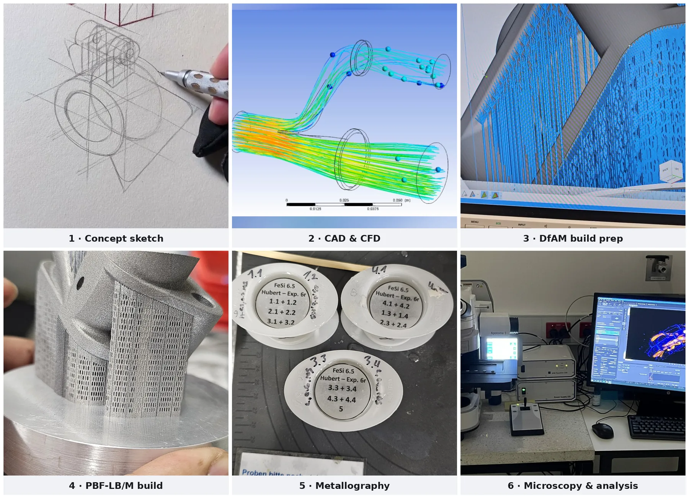

Expertise
Every capability below carries the evidence it rests on. No self-assigned ratings — the work speaks for the level.
Additive manufacturing — process & systems
PBF-LB/M — Laser Powder Bed FusionFull workflow ownership on the ALC2 research system: build preparation, operation, post-processing, evaluation
In-process laser remeltingFinal-layer and cyclic strategies developed, characterised and published — the subject of my Master's thesis
Laser parameter & scan-path optimisationPower, scan speed, hatch spacing, hatch offset, spot diameter, layer thickness and scan rotation — mapped, not guessed
Volumetric energy density modellingProcess behaviour framed across 78–208 J/mm³; melt-regime boundaries identified quantitatively
Melt-regime control — conduction vs. keyholeStable conduction-mode remelting achieved and held across a production window
DMLS — Direct Metal Laser SinteringCo-Cr biocompatible sample production across a full L9 parameter array
Porosity & defect analysisKeyhole, lack-of-fusion, balling, delamination and molten-edge deposition identified and bounded
Support structure & build strategyPlatform tilt, sample spacing and thermal-interference management; measurable reduction in failed builds
Metal powder evaluationGas-atomised FeSi6.5 (Höganäs AB) and Co-Cr; inert-atmosphere handling below 200 ppm residual O₂
In-process monitoringCoaxial melt-pool monitoring integrated on the ALC2 × ICM setup
DfAM — Design for Additive ManufacturingOrientation, support and geometry adaptation for metallic builds
FDM / polymer additive manufacturingPrototyping and concept validation
Materials & characterisation
Soft magnetic alloys — FeSi6.5Master's thesis and peer-reviewed publication in Procedia CIRP
Metallographic preparationSectioning and polishing, SiC 50–2000 grit, 3 µm and 1 µm diamond suspension, Co-m3 etch for Fe-Si
Optical microscopyUp to 500× magnification with quantitative image analysis
Areal surface topographyOne-shot 3D optical profilometry — Sa, 3D elevation maps, line scans
Tactile roughness metrologyRa, Rq, Rz and Rt, measured both parallel and perpendicular to the scan vector
Porosity quantificationPore size, pore count per mm² and area-fraction porosity by adaptive thresholding on my own micrographs
Grain morphology analysisColumnar-to-equiaxed transition characterised across remelting intervals
Dilatometry & thermomechanical analysisThermal expansion to 400 °C at 0.1 nm resolution
Heat treatmentSolution and ageing cycles on printed AlSi10Mg
Aluminium alloys — AlSi10MgThermal expansion study across a 30-specimen geometry matrix
Cobalt-chromium alloysB.E. thesis, medical implant application
Simulation & analysis
ANSYS Mechanical / APDL (FEA)Structural verification of designed components
ANSYS Fluent (CFD)Shielding-gas flow design and analysis for a PBF-LB/M build chamber
Design of Experiments (DoE)4 × 4 parameter matrices across three experimental phases and two alloy systems
Taguchi method, L9 orthogonal arrayNine runs instead of twenty-seven; S/N ratio analysis in Minitab, smaller-the-better
ANOVA & regression analysisFactor ranking and process-property model fitting in Minitab
Python & machine learning foundationsSelf-directed study toward in-process monitoring and defect prediction
CAD & design
CATIA V5Body-in-white structural design, EV component layout, PBF-LB/M gas-flow hardware; certified CIPET 2019
PTC CreoProduct design and CAM; certified CIPET 2019
Siemens NXComponent design; delivered instruction to more than 100 engineers
AutoCAD2D documentation and manufacturing drawings
Reverse engineeringLegacy automotive parts reproduced from physical samples
GD&T / ISO 1101Applied in body-in-white and precision component work
Manufacturing & ways of working
4-axis CNC machining & CAMPrecision automotive component production
Toolpath optimisationFeed rate, depth of cut and tool selection — scrap and cycle-time reduction
Technical documentation & publication85-page thesis and a peer-reviewed Procedia CIRP paper
R&D project coordinationPartner coordination within the SmartPro / Smart-ADD research programme; milestones delivered on schedule
Training & mentoringMore than 100 engineers trained across five CAD and CAE platforms
Machines, instruments & software
Systems I have worked on directly. Where my hands-on time is limited, it says so.
PBF-LB/M systems
- ALC2 research system — operated regularly
- TRUMPF TruPrint 1000 — operated regularly
- TRUMPF TruFiber 400
- SCANLAB intelliSCANse 30
- SLM Solutions SLM 280HL — one supervised session
Build preparation & CAM
- Autodesk Netfabb 2024
- Autodesk Machine Control Framework
- Materialise Magics
Design, simulation & statistics
- CATIA V5
- PTC Creo
- Siemens NX
- ANSYS Mechanical / APDL
- ANSYS Fluent
- AutoCAD
- Minitab
Microscopy & surface metrology
- Zeiss Axio Zoom.V16
- Zeiss Axio Imager.Z2 Vario
- ZEN Core
- KEYENCE VR-3100
- MarSurf M400
Sample preparation & thermal analysis
- Struers Secotom 10
- Struers Tegramin 30
- NETZSCH DIL 402 Supreme
- METTLER TOLEDO TMA/SDTA 2+
- Nabertherm muffle furnace
Process monitoring
- hema ICAM weld coaxial melt-pool monitoring

Languages and certifications are listed on the CV page, together with the full employment and education history.